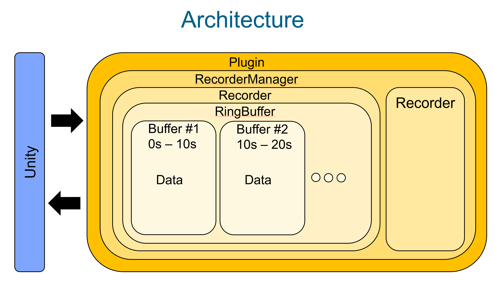

|
Recording Plugin 0.8.3
This plugin can be used to record & replay time series data on windows, linux & android (i.e. on the Oculus Quest).
|
|

| |
|
Recording Plugin 0.8.3
This plugin can be used to record & replay time series data on windows, linux & android (i.e. on the Oculus Quest).
|
|
|
| |
This plugin enables the recording and replaying of time series data on Windows, Linux, and Android platforms (e.g., Oculus Quest). It supports recording of transforms, scene graph structure, sound, and generic time series data. Enhanced features include simultaneous multiple playback capabilities and the ability to record new data while replaying existing recordings, facilitated by unique recorder IDs. In addition, it supports efficient analysis functionalities that allow the analysis of created recordings during playback. Different types of analysis queries (distance queries, velocity queries, ...) can be defined individually or combined for the investigation of complex behaviour.
Functionalities:
Possible use cases:
Requirements:
Architecture 
Step 1: Clone the repository recursively to ensure all submodules are included:
Step 2: Update the paths in CMakeLists.txt to match your setup (UNITY_PLUGINS_DIR).
Step 3: Build the plugin using the following commands:
Step 4: Integrate with your project by using the exposed endpoints from RecordingPlugin.cpp. Example in C#:
Step 1: Clone the repository recursively to ensure all submodules are included:
Step 2: Update the paths in CMakeLists.txt to match your setup (UNITY_PLUGINS_DIR).
Step 3: Configure target architecture in buildAndroid.bat (ANDROID_ABI, ANDROID_PLATFORM)
Step 4: Build the plugin for Android using Windows:
Note: The following code is pseudo-code and demonstrates general usage. It cannot be directly copy-pasted into your project.
Configure Parameters:
Begin Recording:
Begin Replay:
Debugging on Windows:
Plugin output is logged both in the Unity console and the Unity editor log file, which is located at:```
Debugging on Android:
The debug output of the plugin can be read using the android debug bridge: